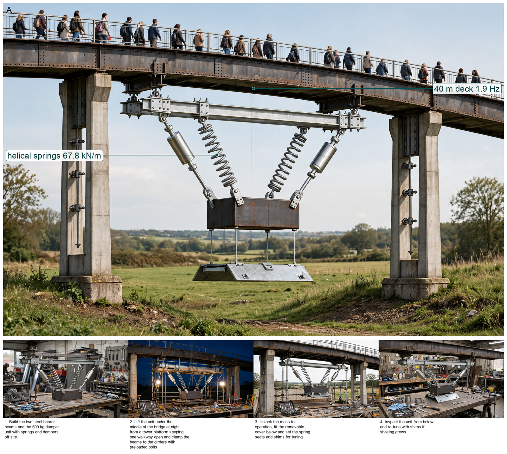
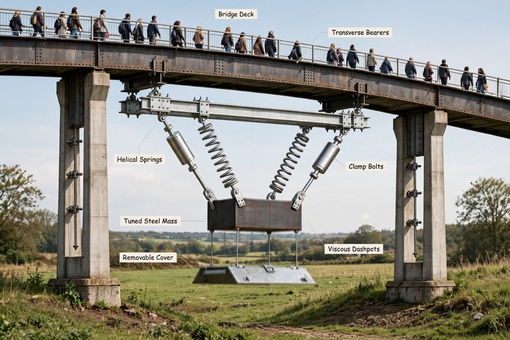
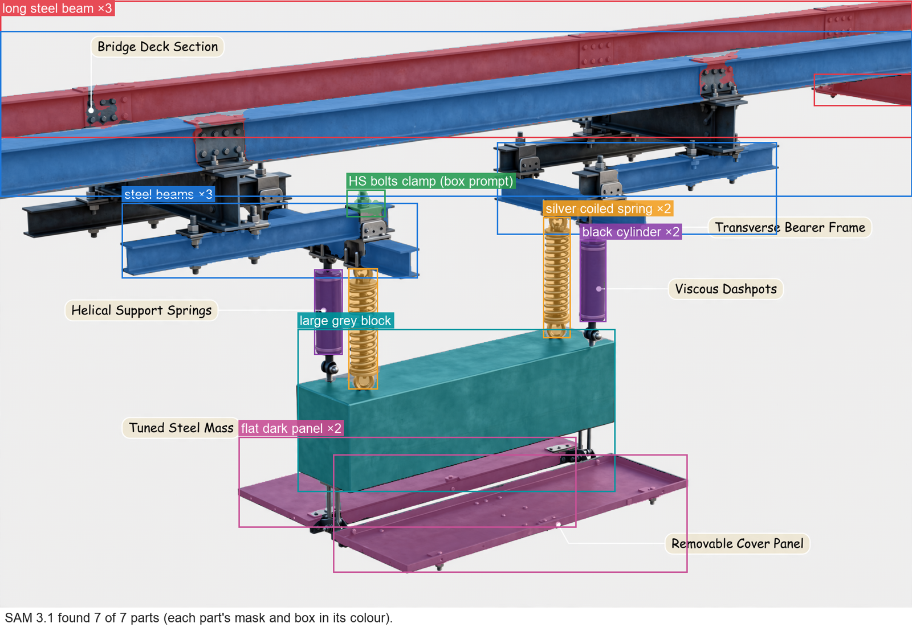

Hardware Scientist — concept report
Vibration retrofit for a lively pedestrian footbridge
A 40 m pedestrian footbridge bounces uncomfortably when crowds walk over it. Its first vertical bending mode is about 1.9 Hz with very low damping. Design a retrofit concept that brings the vibration down to a comfortable level without changing how the bridge looks from the deck.
- Span 40 m; first vertical mode about 1.9 Hz
The concept

A hidden 800 kg weight on soft springs and dampers under the middle of the bridge moves opposite to the deck to soak up the 1.9 Hz bounce and hold shaking near 0.11 m/s2 below the 0.7 m/s2 comfort limit.
Energy: girders -> support frame -> moving mass | Measured: deck acceleration -> accelerometer
Three decisive design choices
- Tune 800 kg mass to 1.83 Hz with 12% damping at 4% mass ratio to cut 1.75 m/s2 bare to 0.106 m/s2 damped
- Hang entire unit from girder bottom flanges on 8 friction clamps for 3.26 slip factor with no drilling and install from below
- Recess unit in under-deck cassette behind color-matched perforated screen with plus-minus 30 mm stroke clearance and lock-off pin
What are the existing girder bottom-flange thickness, clamp spacing and local bending stress under about 1.23 kN per clamp plus under 0.40 kN dynamic to close the flange-bending check?
What happened
How the picture was made


What the segmenter saw (SAM 3.1)
Code asked SAM for each part by a plain phrase and measured the boxes against what the design expects; the critic received the differences as evidence.

How the council changed
The council's instructions were not rewritten in this run.
References
56 sources found by the council's searches and the prior-art check (click to open)
- matec-conferences.org — Assessment of human-induced vibrations of a cable-stayed footbridge (2018) https://www.matec-conferences.org/articles/matecconf/pdf/2018/70/matecconf_vetomacxiv2018_09001.pdf
- sbi.se — Analysis of Footbridge Comfort Vibrations (2024) https://www.sbi.se/wp-content/uploads/2024/05/Analysis-of-Footbridge-Comfort-Vibrations-A-Parametric-Study_Ruuth_Henrik-and-Thuresson_Niklas.pdf
- mentisia.org — Biodynamic Synchronized Coupled Model for Crowd-Footbridge Interaction | European Journal of Formal Sciences and Engineering https://mentisia.org/files/articles/ejfe_v9_n2_26/Toso.pdf
- link.springer.com — Human-induced vibration assessment of a steel arch footbridge with tapered truss cross-section | Advances in Bridge Engineering | Springer Nature Link https://link.springer.com/article/10.1186/s43251-025-00188-y
- mdpi-res.com — Low-Cost Angular-Velocity Measurements for Sustainable Dynamic Identification of Pedestrian Footbridges: A Case Study of the Footbridge in Gdynia (Poland) https://mdpi-res.com/d_attachment/sustainability/sustainability-17-10456/article_deploy/sustainability-17-10456.pdf?version=1763982715
- mdpi.com — Low-Cost Angular-Velocity Measurements for Sustainable Dynamic Identification of Pedestrian Footbridges: A Case Study of the Footbridge in Gdynia (Poland) https://www.mdpi.com/2071-1050/17/23/10456
- WWW.mdpi.com — Experimental and Numerical Study on Dynamics of Two Footbridges with Different Shapes of Girders https://WWW.mdpi.com/2076-3417/10/13/4505
- mdpi.com — Identification of a Human-Structure Interaction Model on an Ultra-Lightweight FRP Footbridge https://www.mdpi.com/2076-3417/11/14/6654
- mdpi.com — A Review of Evaluation Methods of Standards for Structural Vibration Serviceability under Crowd Walking https://www.mdpi.com/2075-5309/14/3/675
- core.ac.uk — Requirements of technical standards for the dynamic analysis of the load-bearing structures of footbridges https://core.ac.uk/download/pdf/192164607.pdf
- mdpi.com — Identification of a Human-Structure Interaction Model on an Ultra https://www.mdpi.com/2076-3417/11/14/6654/html
- grampianfasteners.com — Type CF High Friction Clamp, Galvanised - Grampian Fasteners https://www.grampianfasteners.com/product/24037
- barbourproductsearch.info — Lindapter's M24 Type AF Steelwork Fixing https://www.barbourproductsearch.info/lindapter-s-m24-type-af-steelwork-fixing-news011686.html
- ancon.co.nz — Steelwork and Rail Fixings https://www.ancon.co.nz/products/lindapter-weld-free-steel-connectors/product-range/steelwork-and-rail-fixings
- accio.com — 4x4 Square Metal Post: Durable & Rust-Resistant https://www.accio.com/plp/4x4-square-metal-post
- nzta.govt.nz — SPECIFICATION FOR COATING STEELWORK ON HIGHWAY STRUCTURES https://www.nzta.govt.nz/assets/resources/specification-for-coating-steelwork-on-highway-structures/s9-specification-for-coating-steelwork-on-highway-structures-202010.pdf
- rosensteelga.com — Hot Dip Galvanized Material https://www.rosensteelga.com/steel-raw-materials/hot-dip-galvanized-steel.html
- mdpi.com — Experimental Tests and Numerical Analyses for the Dynamic Characterization of a Steel and Wooden Cable-Stayed Footbridge http://mdpi.com/2412-3811/8/6/100/htm
- fixingsmith.com — Lindapter Beam Clamp Type FL for Flange | Clearance Bargains https://fixingsmith.com/products/lindapter-beam-clamp-type-fl
- lindapter.com — Lindapter | Type F3 Beam Flange Clamp https://www.lindapter.com/us/product/type-f3-beam-flange-clamp
- lindapter.com — Lindapter | Type F3 Beam Flange Clamp https://www.lindapter.com/product/type-f3-beam-flange-clamp?lang=en
- matec-conferences.org — Vibration analysis of footbridges: an overview of the current practice (2018) https://www.matec-conferences.org/articles/matecconf/pdf/2018/70/matecconf_vetomacxiv2018_10002.pdf
- 1library.net — Guarda Footbridge in Portugal - Design of Footbridges https://1library.net/article/guarda-footbridge-in-portugal-design-of-footbridges.y64e10nq
- jstage.jst.go.jp — Microsoft Word - Wahyuni_ITS.doc (2009) https://www.jstage.jst.go.jp/article/eastpro/2009/0/2009_0_303/_pdf
- digitallibrary.aau.ac.ae — Control of Vibrations of Common Pedestrian Bridges in Jordan Using Tuned Mass Dampers https://digitallibrary.aau.ac.ae/bitstream/handle/123456789/555/Control%20of%20Vibrations%20of%20Common%20Pedestrian%20Bridges%20in%20Jordan%20Using%20Tuned%20Mass%20Dampers.pdf?sequence=1&isAllowed=y
- mdpi-res.com — | Article | | https://mdpi-res.com/d_attachment/applsci/applsci-12-06204/article_deploy/applsci-12-06204.pdf
- backend.orbit.dtu.dk — TMD_nscm19.dvi https://backend.orbit.dtu.dk/ws/files/4682306/TMD_nscm19.pdf
- structechnique.com — Retrofitting Eagles Meadow Bridge with a Tuned Mass Damper https://structechnique.com/download/15/free/aO4RBDPc
- mediatum.ub.tum.de — Donaubruecken_Final.pdf https://mediatum.ub.tum.de/doc/1762603/document.pdf
- fstructures.com — Pedestrian Bridge Dynamics: Footfall-Induced Vibration and Damping http://fstructures.com/structures/pedestrian-bridge-vibration-dynamics/
- files.kgf.cz — Tuned Mass Dampers for Vibration Control of https://files.kgf.cz/6btngt25so12/Tuned%20Mass%20Dampers%20for%20Vibration%20Control%20of%20Footbridges%20from%20an%20Architectural%20Point%20of%20View_KGF%20hydraulika_Jiri%20Kucera_Bridges%20in%20Danube%20Bas.pdf?download
- api.repository.cam.ac.uk — Content https://api.repository.cam.ac.uk/server/api/core/bitstreams/3afdf7af-401b-44f6-8bdb-b40f25db454f/content
- ioa.org.uk — ICSV22 Template https://www.ioa.org.uk/system/files/publications/C MEINHARDT D NEWLAND J TALBOT D TAYLOR VIBRATION PERFORMANCE OF LONDONS MILLENNIUM FOOTBRIDGE.pdf
- fullscaledynamics.com — Vibration Simulations and Tuned Mass Damper Design for Castle Bridge, Bristol https://www.fullscaledynamics.com/project/vibration-simulations-and-tuned-mass-damper-design-for-castle-bridge-bristol/
- scribd.com — Design Criteria for Tuned Mass Dampers | PDF https://www.scribd.com/document/467340093/P-1
- dspace.vut.cz — Tuned mass dampers ‐ evaluation of the effect on two real footbridges https://dspace.vut.cz/server/api/core/bitstreams/fe91b2bb-e77d-41e7-847d-e32cfb3c7d2a/content
- pmarketresearch.com — Passive Tuned Mass Damper Market https://pmarketresearch.com/auto/passive-tuned-mass-damper-market/
- core.ac.uk — Mitigation of Traffic-Induced Bridge Vibrations through Passive https://core.ac.uk/download/pdf/4431304.pdf
- pmarketresearch.com — Tuned Mass Damper System Market https://pmarketresearch.com/auto/tuned-mass-damper-system-market/
- dataintelo.com — Active Tuned Mass Dampers Market Size, Share & Forecast Report 2025 to 2034 | Dataintelo https://dataintelo.com/report/active-tuned-mass-dampers-market
- dataintelo.com — Bridge Wind Vibration Tuned Mass Dampers Market Research Report 2033 https://dataintelo.com/report/bridge-wind-vibration-tuned-mass-dampers-market
- pmarketresearch.com — Worldwide Tuned Mass Damper (TMD) Market 2026 https://pmarketresearch.com/worldwide-tuned-mass-damper-tmd-market-research/
- market.us — Tuned Mass Damper (TMD) Market https://market.us/report/tuned-mass-damper-market/
- growthmarketreports.com — Bridge Wind Vibration Tuned Mass Dampers Market Research Report 2033 https://growthmarketreports.com/report/bridge-wind-vibration-tuned-mass-dampers-market
- scribd.com — Seismic Protection with Mass Dampers | PDF | Resonance | Mechanics https://www.scribd.com/document/312613078/Mass-Dampers
- patents.google.com — US6292967B1 - TMD-damped stay cable and method and TMD https://patents.google.com/patent/US6292967B1/en
- eureka.patsnap.com — Permanent-magnet tuned mass damping device for stayed cable vibration damping control - Eureka | Patsnap https://eureka.patsnap.com/patent-CN103758029A
- patents.google.com — CN112227180A - Stay cable combined vibration reduction device and method https://patents.google.com/patent/CN112227180A/en
- patents.google.com — CN113737633A - Low-frequency tuned mass damper https://patents.google.com/patent/CN113737633A/en
- patents.google.com — CN103774771A - Rigidity and dampness integrating horizontal omnidirectional tuned mass damper https://patents.google.com/patent/CN103774771A/en
- eureka.patsnap.com — Ultra-low frequency tuned liquid mass damper and design method of the same - Eureka | Patsnap http://eureka.patsnap.com/patent-US10634205B2
- eureka.patsnap.com — Adjustable damping energy storage type tuned mass damper and energy storage method thereof - Eureka | Patsnap https://eureka.patsnap.com/patent-CN102493572B
- eureka.patsnap.com — Ultra-low frequency tuned liquid mass damper and design method of the same - Eureka | Patsnap https://eureka.patsnap.com/patent-US20190249740A1
- patents.google.com — CN102888904B - Novel two-dimensional tuning mass damper https://patents.google.com/patent/CN102888904B/en
- patents.google.com — CN102561174A - Green shock and vibration absorbing bridge tower https://patents.google.com/patent/CN102561174A/en
- patents.google.com — CN108797311B - https://patents.google.com/patent/CN108797311B/en
Files
Run 20261102-082123_vibration-retrofit-for-a-lively-pedestri · total cost $1.42 · conceptual illustration — physical performance not established.